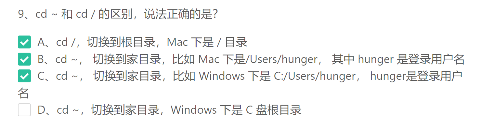
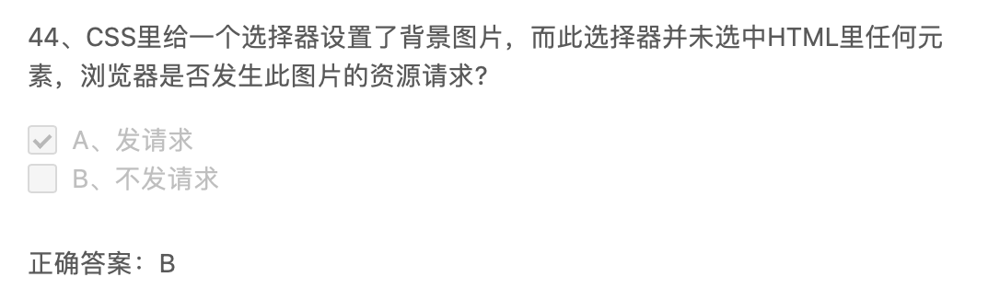

1、
A 直接退出。 B 强制退出。 C 写法有问题
2、
只要有checked这个属性就会被勾选，不管他的值是什么
3、
4、
A 20年前流行的东西，现在不流行的。
C 会导致代码语义化很差，所有都是div
5、
6、
7、
cd ..这是正确写法，中间不能少空格，少了就提示命令不存在，终端把cd和..合到一起读取了，无法理解这个命令
8、
9、

可以输入pwd，此命令是显示当前路径
10、
11、
12、
IE老页面是用怪异模式（包括使用怪异盒模型的样式），后来新页面是往标准盒模型（包括使用标准盒模型）去做的
13、
14、
A a链接是href，图片等等才是src。 C、E、H id、title和class都是全局属性，所有标签都可以用。 F alt是图片的属性
15、
16、
17、

18、
19、
20、
C 中间的**这是注释** 其实都是注释的内容，可以随便写。（C选项这样设计有点误导人。差评！）
21、
22、
23、
空格代表后代
24、
25、
26、
27、
28、
29、
30、
A 只有块级元素外边距才会合并，内联元素和inline-block都是不会合并的。 B 外边距合并都是指相邻的上下外边距合并。C 这些方法只能阻止父子间的外边距合并，并不能阻止边框外的相邻块级元素的合并。
31、
32、
33、
34、
vertical-align本身最初的用法就是用于表格的td元素上，也可以用在行内和行内块元素上
35、
36、
A float专门针对IE浏览器。比如个人实验项目可以用Grid布局，公司项目考虑flex布局，而政府项目要求兼容IE6、7、8就得用浮动布局。 D 绝对定位才完全脱离普通流。浮动是半脱离，其他的浮动元素仍然能找到这个浮动元素。
37、
38、
39、
40、
又是一道傻逼题。DE据老师说 是表达的一个意思，只是写法不一样.....说最近的是定位元素的祖先这句话就不包含static。无语子。 -_-|| 这题出得真烂。
41、
42、
只要页面发生了变化就会触发repaint
43、
reflow：重新计算。
44、

45、
这题有点偏，别管了
46、
47、
48、
49、
50、
51、
52、
53、
参考链接里没提到background